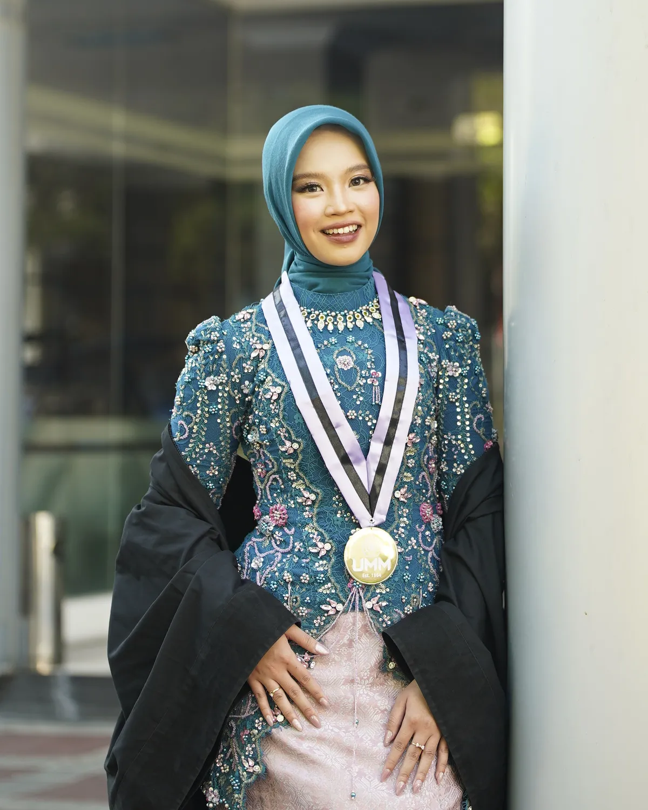

S1 Psikologi, Universitas Muhammadiyah Malang
Skripsi
Pengembangan alat ukur psikologi school safety.
Mata kuliah terkait
Intelligence, personality, aptitude and interest assessment, psychological counseling dan training design.
Saya Gusti Apta Salsabila, lulusan S1 Psikologi UMM dengan IPK 3,83. Selama magang di Bagian Psikologi Polda Jatim, saya memverifikasi 600+ berkas seleksi calon anggota Polri.

Empat bulan di Polda Jatim saya memeriksa berkas seleksi, menskor tes Kraepelin dan mencatat wawancara psikologis. Di BEM, saya mengurus anggaran Rp78,5 juta sampai LPJ selesai.
13 Mei 2023. Menyusun usulan anggaran bersama divisi lain dan mencatat pengeluaran acara.
Lihat12 sampai 15 September 2023. Membantu bendahara I mengelola keuangan dan operasional acara mahasiswa baru.
Lihat2023/2024. Memastikan peralatan acara tersedia dan lengkap sesuai kebutuhan setiap divisi.
LihatMei 2024 di Desa Ngabab, Pujon, Batu. Mengelola keuangan kegiatan dan berkoordinasi dengan divisi lain.
LihatSkripsi
Pengembangan alat ukur psikologi school safety.
Mata kuliah terkait
Intelligence, personality, aptitude and interest assessment, psychological counseling dan training design.
Aplikasi yang saya pakai
UMM Language Center, skor 410 (C1), September 2026
LihatTalentiv Academy, 18 jam, September 2026
LihatRadhiant Academy, 3 jam, Oktober 2026
LihatRumah Konsul, Season 5, Juni 2026
LihatBiro SDM Polda Jawa Timur, Maret sampai Juli 2025
Lihat